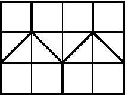

A 3x4 rectangle contains 6 points. Prove that amongst them there will be two points, such that the distance between them is no greater than $\sqrt5$
We can divide the rectangle into 5 sections as shown on the diagram. One of these sections will contain at least two points, but the distance between any two points within each of these sections does not exceed $\sqrt5$.
